<!DOCTYPE lake>
<p data-lake-id="u9bce270c" id="u9bce270c"><span class="lake-fontsize-12" data-lake-id="ubb152125" id="ubb152125">可以使用windows下的vscode编写ros代码</span></p><h1 data-lake-id="Qugqx" id="Qugqx"><span data-lake-id="u47e81813" id="u47e81813">SSH服务端配置</span></h1><blockquote data-lake-id="ua195fe0e" id="ua195fe0e"><p data-lake-id="u2ac066d6" id="u2ac066d6"><span class="lake-fontsize-12" data-lake-id="u25c28caa" id="u25c28caa">给大家的镜像默认已经安装并开启ssh服务,这个操作可以省略</span></p></blockquote><ul list="ua40e4f39"><li data-lake-id="u24168607" fid="u2bfa745f" id="u24168607"><span class="lake-fontsize-12" data-lake-id="udac81bdc" id="udac81bdc">安装ssh服务端</span></li></ul><span class="yuque-card-unsupported">[codeblock]</span><ul list="u90497ce8"><li data-lake-id="u281c57ba" fid="ud7f1ada0" id="u281c57ba"><span class="lake-fontsize-12" data-lake-id="u28ad1b1c" id="u28ad1b1c">开始ssh服务</span></li></ul><span class="yuque-card-unsupported">[codeblock]</span><ul list="u5fb92f4b"><li data-lake-id="u49826f20" fid="ue2d229af" id="u49826f20"><span class="lake-fontsize-12" data-lake-id="u92f88b53" id="u92f88b53">查看ssh服务状态</span></li></ul><span class="yuque-card-unsupported">[codeblock]</span><p data-lake-id="u30e87ae2" id="u30e87ae2"><br/></p><p data-lake-id="u717aaae3" id="u717aaae3"><span data-lake-id="u29501ab2" id="u29501ab2">查是否安装完成</span></p><span class="yuque-card-unsupported">[codeblock]</span><p data-lake-id="u5ce645c9" id="u5ce645c9"><span data-lake-id="u25fe5d67" id="u25fe5d67">如果出现了 sshd 和 ssh-agent 那就说明服务器和客户端都已经启动完成了。</span></p><p data-lake-id="u3cc8f9cd" id="u3cc8f9cd"><span data-lake-id="u638cf1c6" id="u638cf1c6">如果缺少 sshd ，说明ssh服务没有启动或者没有安装。</span></p><p data-lake-id="u0126a565" id="u0126a565"><span data-lake-id="u2e27594b" id="u2e27594b">如果缺少 ssh-agent，且已经安装成功了，则可以使用下方的命令：</span></p><span class="yuque-card-unsupported">[codeblock]</span><p data-lake-id="u107e84ba" id="u107e84ba"><span data-lake-id="ufe49ec16" id="ufe49ec16">然后再检查，就会发现缺失的 ssh-agent 出现了。</span></p><h2 data-lake-id="tEKZ6" id="tEKZ6"><span data-lake-id="ucfedc1fb" id="ucfedc1fb">SSH文件配置</span></h2><p data-lake-id="u22fbbc7e" id="u22fbbc7e"><span data-lake-id="ue46fd903" id="ue46fd903">使用以下命令打开 sshd_config 文件</span></p><span class="yuque-card-unsupported">[codeblock]</span><p data-lake-id="ueb4ffe27" id="ueb4ffe27"><span data-lake-id="ua31e510b" id="ua31e510b">将 Port 前方的 # 删掉，然后改一个自己想要的端口号，建议端口号不要小于6000！</span></p><p data-lake-id="u1ba9aa2e" id="u1ba9aa2e"><span data-lake-id="u393e75f6" id="u393e75f6">​</span><br/></p><p data-lake-id="udaa12f30" id="udaa12f30"><span data-lake-id="u115384ff" id="u115384ff">这里我们修改为 8080 端口。</span></p><p data-lake-id="ud0999788" id="ud0999788"><span data-lake-id="u1bf3376c" id="u1bf3376c">默认端口号是：22</span></p><p data-lake-id="u724dbc6e" id="u724dbc6e"><span data-lake-id="u9998f0b0" id="u9998f0b0">不修改端口号则系统会使用默认端口号。</span></p><p data-lake-id="u5f0b07f8" id="u5f0b07f8">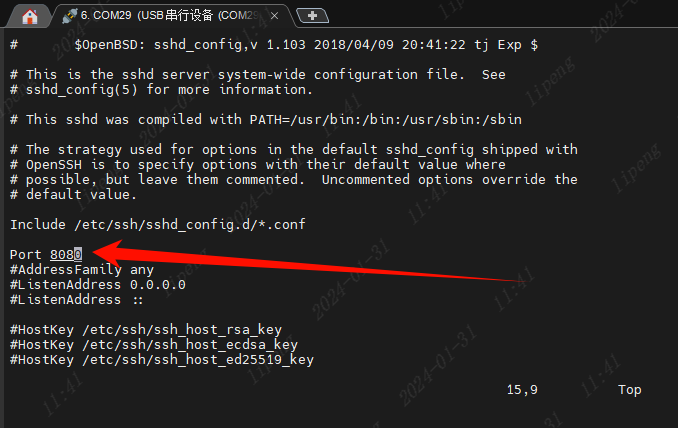</p><p data-lake-id="u14ee9d60" id="u14ee9d60"><span data-lake-id="u92d688e3" id="u92d688e3">​</span><br/></p><p data-lake-id="ub658db3c" id="ub658db3c"><span data-lake-id="u7a9fb773" id="u7a9fb773">打开文件后找到这个位置，将箭头指示的语句开头的 # 删掉。</span></p><p data-lake-id="u8b9273e0" id="u8b9273e0">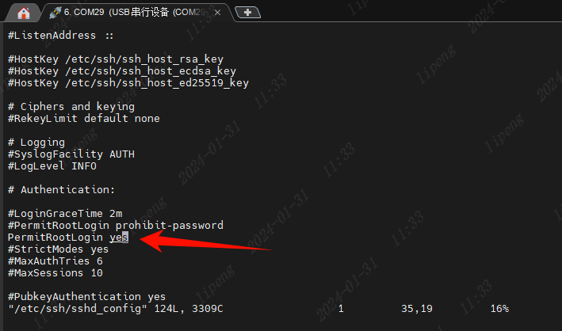</p><p data-lake-id="u6d00264f" id="u6d00264f"><span data-lake-id="uc0f9cd21" id="uc0f9cd21">如果没有这个语句，则自己手打上去！！！！</span></p><p data-lake-id="u163c5ba4" id="u163c5ba4"><span data-lake-id="u18ce4507" id="u18ce4507">​</span><br/></p><p data-lake-id="u9d92dd24" id="u9d92dd24"><span data-lake-id="u08eac735" id="u08eac735">完成修改之后我们输入命令重启ssh，这样配置就生效了。</span></p><span class="yuque-card-unsupported">[codeblock]</span><p data-lake-id="u8d8ce5db" id="u8d8ce5db"><span data-lake-id="u73f78cd1" id="u73f78cd1">这样就重启成功了</span></p><p data-lake-id="u0a5ead80" id="u0a5ead80"><br/></p><h2 data-lake-id="fP7RA" id="fP7RA"><span data-lake-id="ud223e8bd" id="ud223e8bd">查看IP地址</span></h2><p data-lake-id="uc8cd6edc" id="uc8cd6edc"><span data-lake-id="u6c40c655" id="u6c40c655">我们将ubuntu已经连接上网络</span></p><p data-lake-id="ued5f5ecf" id="ued5f5ecf"><span data-lake-id="uad78c267" id="uad78c267">然后我们输入以下命令，查看本机的IP地址：</span></p><span class="yuque-card-unsupported">[codeblock]</span><p data-lake-id="u1b7626ac" id="u1b7626ac"><span data-lake-id="ueb4b9175" id="ueb4b9175">只有 usb0 是拥有inet这个选项的，上面的IP为：192.168.137.190 （我们记住这个IP，这个IP是用来远程登录SSH用的）</span></p><p data-lake-id="u1d6b7ebb" id="u1d6b7ebb">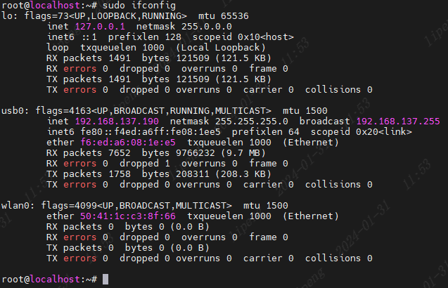</p><p data-lake-id="u03082e38" id="u03082e38"><br/></p><h1 data-lake-id="QAY9n" id="QAY9n"><span data-lake-id="uf1277373" id="uf1277373">windows端vscode连接配置</span></h1><p data-lake-id="uf1a11c6e" id="uf1a11c6e"><br/></p><p data-lake-id="u4f5a4bc3" id="u4f5a4bc3"><br/></p><p data-lake-id="ubdda68ae" id="ubdda68ae"><br/></p><ul list="u66b38adb"><li data-lake-id="ude60e493" fid="u7e8b5640" id="ude60e493"><strong><span class="lake-fontsize-14" data-lake-id="u88ab08c4" id="u88ab08c4">安装remote-ssh远程ssh连接插件</span></strong></li></ul><p data-lake-id="ud60361c3" id="ud60361c3">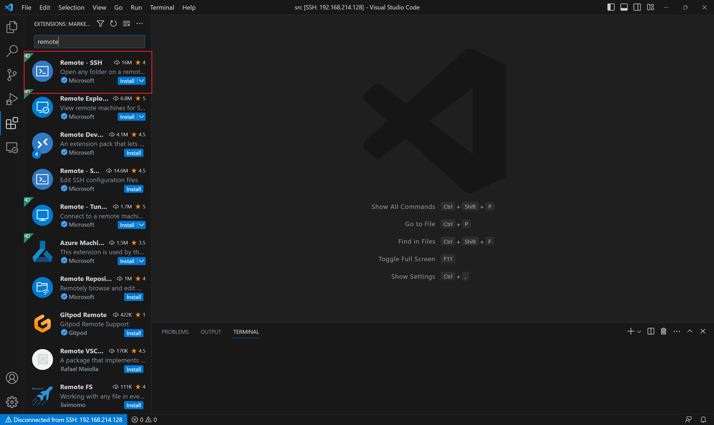</p><ul list="u6623550f"><li data-lake-id="u83605329" fid="u90fffc70" id="u83605329"><span class="lake-fontsize-14" data-lake-id="u9d0abbc9" id="u9d0abbc9">添加远程ssh连接地址</span></li></ul><p data-lake-id="u80303d03" id="u80303d03">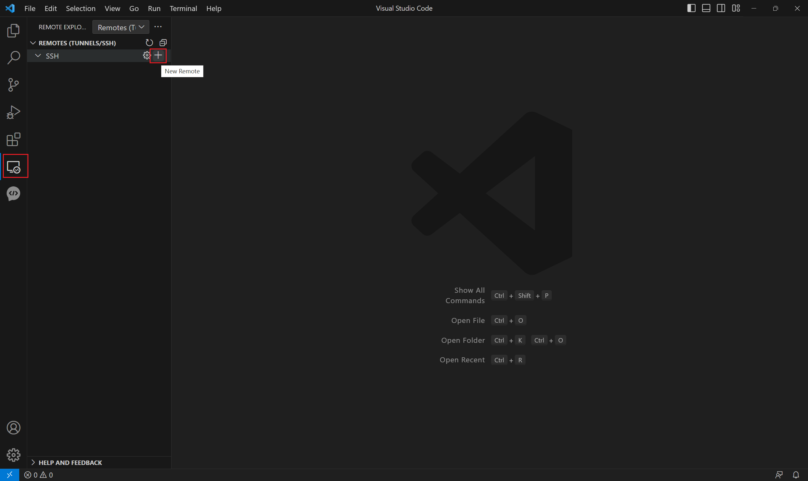</p><ul list="uf466a6fa"><li data-lake-id="u8c794ffa" fid="ub66c8d83" id="u8c794ffa"><strong><span class="lake-fontsize-14" data-lake-id="uaab97aa4" id="uaab97aa4">ssh连接ubuntu虚拟机</span></strong></li></ul><span class="yuque-card-unsupported">[codeblock]</span><p data-lake-id="uef49eeed" id="uef49eeed">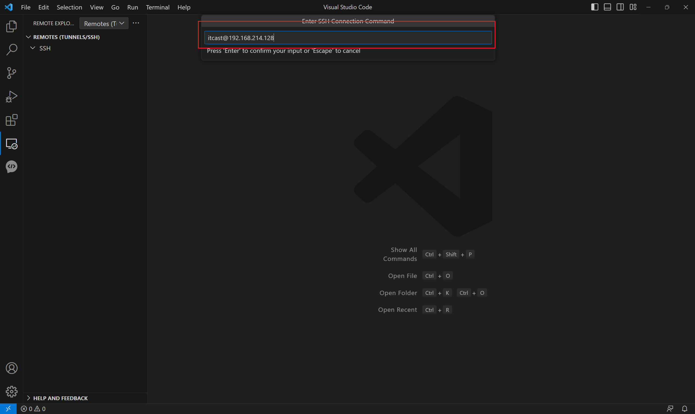</p><ul list="u396e1b58"><li data-lake-id="u1e72bdb0" fid="uc8fd2b83" id="u1e72bdb0"><strong><span class="lake-fontsize-14" data-lake-id="ua1edfbc9" id="ua1edfbc9">选择ssh配置文件的位置</span></strong></li></ul><p data-lake-id="u6e0f4c38" id="u6e0f4c38">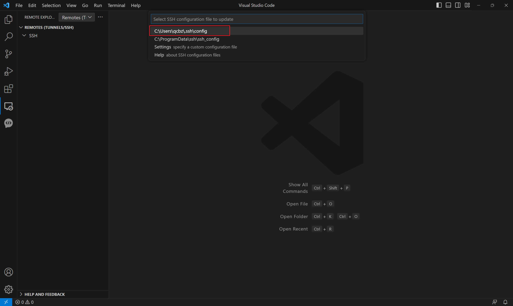</p><ul list="uf9850a0c"><li data-lake-id="ued6cd8a8" fid="u58cd9ebc" id="ued6cd8a8"><strong><span class="lake-fontsize-14" data-lake-id="uacbcfe80" id="uacbcfe80">点击连接</span></strong></li></ul><p data-lake-id="uc5218003" id="uc5218003">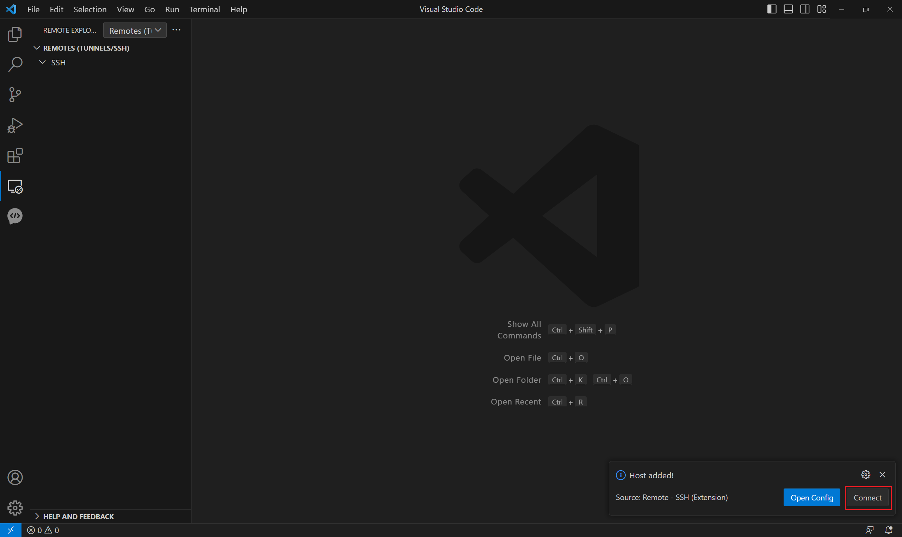</p><ul list="u20385cf2"><li data-lake-id="ub5cb261a" fid="ucd3d9e16" id="ub5cb261a"><strong><span class="lake-fontsize-14" data-lake-id="uad23499d" id="uad23499d">输入登录密码</span></strong></li></ul><p data-lake-id="ubc6e96b4" id="ubc6e96b4">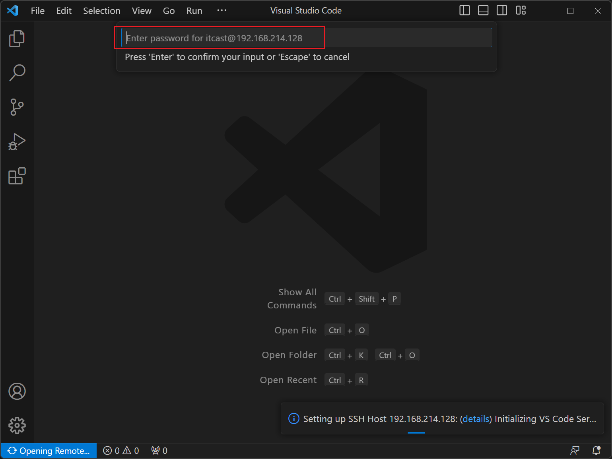</p><ul list="uc3ae45b8"><li data-lake-id="ub7fe3a8d" fid="ubdd814bd" id="ub7fe3a8d"><strong><span class="lake-fontsize-14" data-lake-id="ufb4fbfc2" id="ufb4fbfc2">连接成功</span></strong></li></ul><p data-lake-id="u81ae5197" id="u81ae5197">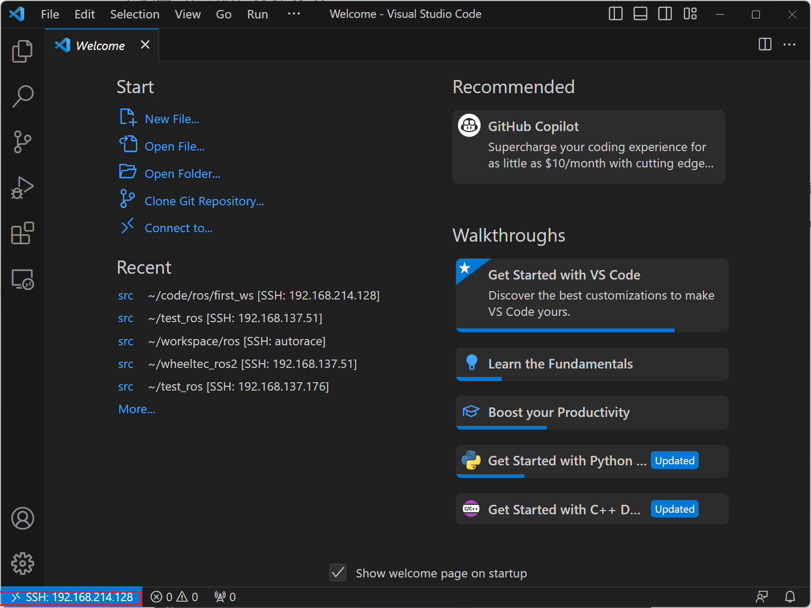</p><ul list="u25e55629"><li data-lake-id="ufefe715a" fid="u6fcfd904" id="ufefe715a"><strong><span class="lake-fontsize-14" data-lake-id="u3c186949" id="u3c186949">打开远程工程目录</span></strong></li></ul><p data-lake-id="u5271e767" id="u5271e767">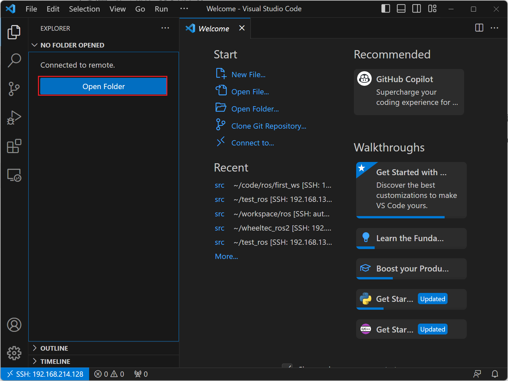</p><ul list="u200b2bfd"><li data-lake-id="u5999344d" fid="u6651564c" id="u5999344d"><strong><span class="lake-fontsize-14" data-lake-id="ua9079cbe" id="ua9079cbe">选择远程代码路径并点击ok即可</span></strong></li></ul><p data-lake-id="ue716bdcb" id="ue716bdcb">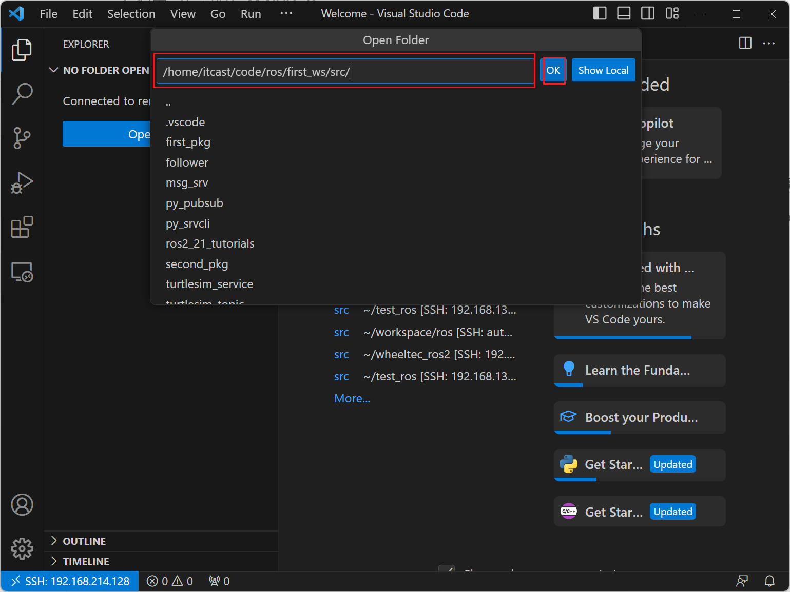</p><ul list="u935ad961"><li data-lake-id="u0cc7a24b" fid="u872d998c" id="u0cc7a24b"><strong><span class="lake-fontsize-14" data-lake-id="u96ee8827" id="u96ee8827">输入远程密码</span></strong></li></ul><p data-lake-id="u5ff94e6d" id="u5ff94e6d">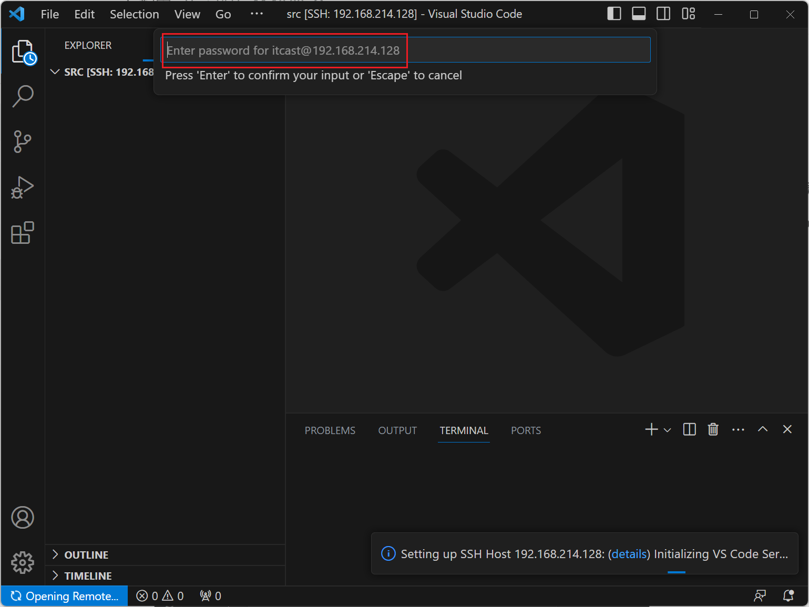</p><ul list="u12f6cb73"><li data-lake-id="u6a54934a" fid="ue449908b" id="u6a54934a"><span data-lake-id="u923d433e" id="u923d433e">信任工程作者</span></li></ul><p data-lake-id="u412832e3" id="u412832e3">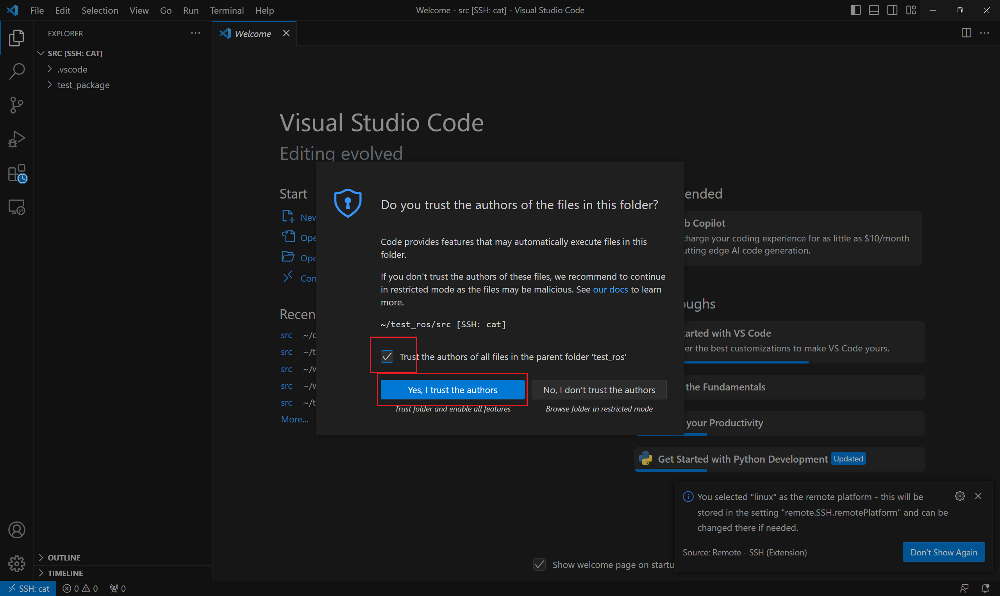</p><p data-lake-id="uade1bdf1" id="uade1bdf1"><br/></p><p data-lake-id="ue08156fc" id="ue08156fc"><br/></p><h2 data-lake-id="j6W1U" id="j6W1U"><span data-lake-id="u8d6876be" id="u8d6876be">问题1：卡在下载服务器中</span></h2><p data-lake-id="u4e5c52c3" id="u4e5c52c3"><span data-lake-id="u68d5991a" id="u68d5991a">请使用全局科学办法</span></p><h3 data-lake-id="a7AAW" id="a7AAW">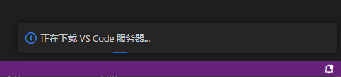</h3><p data-lake-id="u58288083" id="u58288083"><span data-lake-id="u39174abd" id="u39174abd">​</span><br/></p><h2 data-lake-id="ll7aE" id="ll7aE"><span data-lake-id="u7aa650ab" id="u7aa650ab">ssh免密登录</span></h2><p data-lake-id="u722491dd" id="u722491dd"><span data-lake-id="u4bcc1923" id="u4bcc1923">VScode通过ssh连接ubuntu需要多次输入密码,可以配置ssh免密登录</span></p><ol list="u219c7fad"><li data-lake-id="u2d049e4b" fid="u8bfc0e5c" id="u2d049e4b"><span data-lake-id="ua4c8076c" id="ua4c8076c">在windows端生成密钥对</span></li></ol><span class="yuque-card-unsupported">[codeblock]</span><blockquote data-lake-id="uc4978cf3" id="uc4978cf3"><p data-lake-id="u9fb4c382" id="u9fb4c382"><span data-lake-id="u9b9534fc" id="u9b9534fc">生成的密钥对在</span><code data-lake-id="u95e29c3c" id="u95e29c3c"><span data-lake-id="u52c261d3" id="u52c261d3">C:\Users\用户名\.ssh</span></code><span data-lake-id="ucf62568a" id="ucf62568a">下</span></p><p data-lake-id="u07197fa4" id="u07197fa4">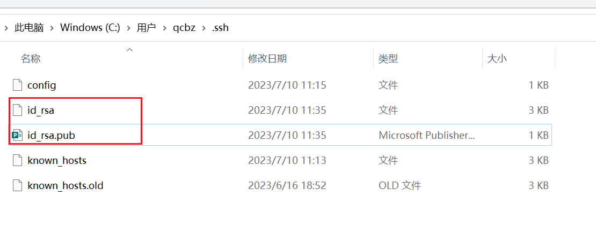</p></blockquote><ol list="u250e25fa" start="2"><li data-lake-id="u23cbe27f" fid="u7c3129fd" id="u23cbe27f"><span data-lake-id="u9eb8cadb" id="u9eb8cadb">ubuntu的</span><code data-lake-id="u90a88875" id="u90a88875"><span data-lake-id="u624c02a9" id="u624c02a9">~/.ssh</span></code><span data-lake-id="u13b169cc" id="u13b169cc">目录下创建</span><code data-lake-id="u2f1a581b" id="u2f1a581b"><span data-lake-id="u7fc11d6b" id="u7fc11d6b">authorized_keys</span></code><span data-lake-id="u682f4ce5" id="u682f4ce5">文件,并将上面生成的公钥</span><code data-lake-id="u8e33b01e" id="u8e33b01e"><span data-lake-id="u5443d3e3" id="u5443d3e3">id_rsa.pub</span></code><span data-lake-id="u7b730e5f" id="u7b730e5f">内容复制到</span><code data-lake-id="ue42ee805" id="ue42ee805"><span data-lake-id="u4d113265" id="u4d113265">authorized_keys</span></code><span data-lake-id="ub9ff7921" id="ub9ff7921"> 文件中</span></li></ol><p data-lake-id="uf1fc7a86" id="uf1fc7a86">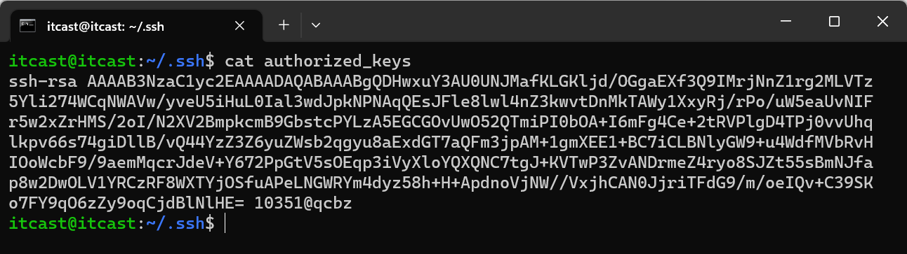</p><ol list="ued1866a5" start="3"><li data-lake-id="u170393da" fid="u44c4f2c0" id="u170393da"><span data-lake-id="u8aa623c9" id="u8aa623c9">关闭</span><code data-lake-id="u720e88a2" id="u720e88a2"><span data-lake-id="u67c20cfd" id="u67c20cfd">authorized_keys</span></code><span data-lake-id="u590b77f2" id="u590b77f2"> 文件即可,后面VScode就不需要输入登录密码</span></li></ol><h2 data-lake-id="atat1" id="atat1"><span data-lake-id="u4114705a" id="u4114705a">安装ros需要的插件</span></h2><ul list="ufc13916e"><li data-lake-id="u83dbf025" fid="ue255def6" id="u83dbf025"><strong><span class="lake-fontsize-14" data-lake-id="u7ce489b7" id="u7ce489b7">python支持插件</span></strong></li></ul><p data-lake-id="uea0861ea" id="uea0861ea">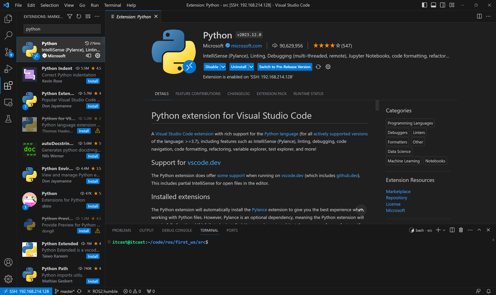</p><p data-lake-id="u09de605b" id="u09de605b"><br/></p><p data-lake-id="u3f02e200" id="u3f02e200"><br/></p><p data-lake-id="ud9961ff6" id="ud9961ff6"><span data-lake-id="u53879b4a" id="u53879b4a">---------------------------------------------------------------------</span></p><p data-lake-id="u8c0ee83e" id="u8c0ee83e"><span data-lake-id="u5949f17e" id="u5949f17e">后续是ros需要的插件</span></p><p data-lake-id="u3169b613" id="u3169b613"><br/></p><ul list="u2610a195"><li data-lake-id="ua0962166" fid="ua87fc6cc" id="ua0962166"><strong><span class="lake-fontsize-14" data-lake-id="u9d37c5ea" id="u9d37c5ea">C/C++插件</span></strong></li></ul><p data-lake-id="u0cc2cffc" id="u0cc2cffc">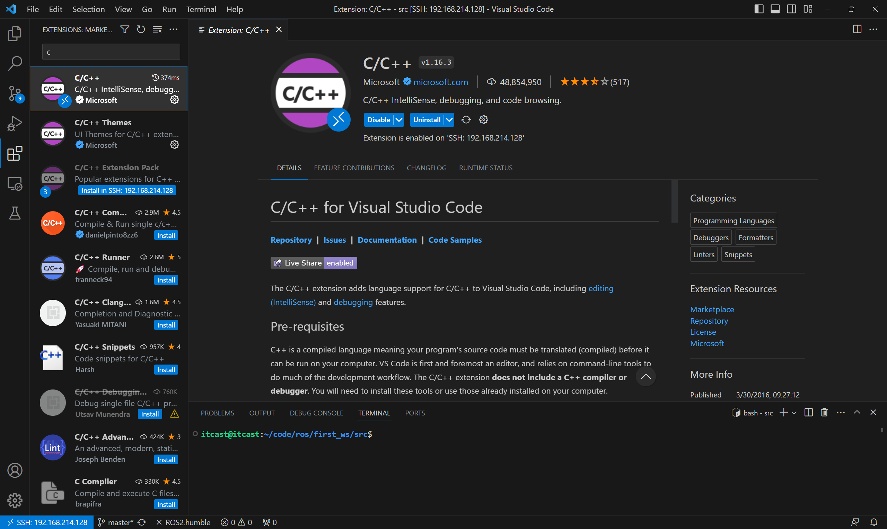</p><ul list="u6e9b7715"><li data-lake-id="u7d0e6620" fid="ubbae3bec" id="u7d0e6620"><strong><span class="lake-fontsize-14" data-lake-id="u03aa895c" id="u03aa895c">CMake插件</span></strong></li></ul><p data-lake-id="u99d59a3f" id="u99d59a3f">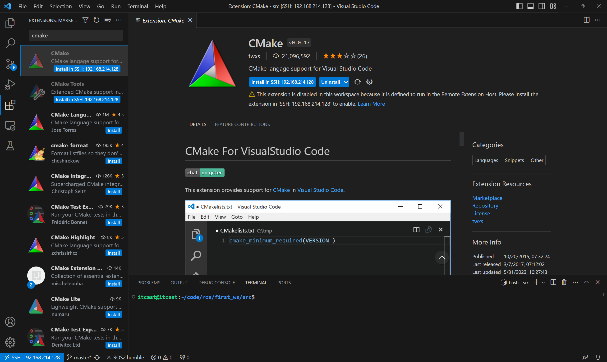</p><ul list="uf440727d"><li data-lake-id="u3cfccbbf" fid="u24cafcfe" id="u3cfccbbf"><strong><span class="lake-fontsize-14" data-lake-id="ucce6121f" id="ucce6121f">ROS插件</span></strong></li></ul><p data-lake-id="uc53fde17" id="uc53fde17">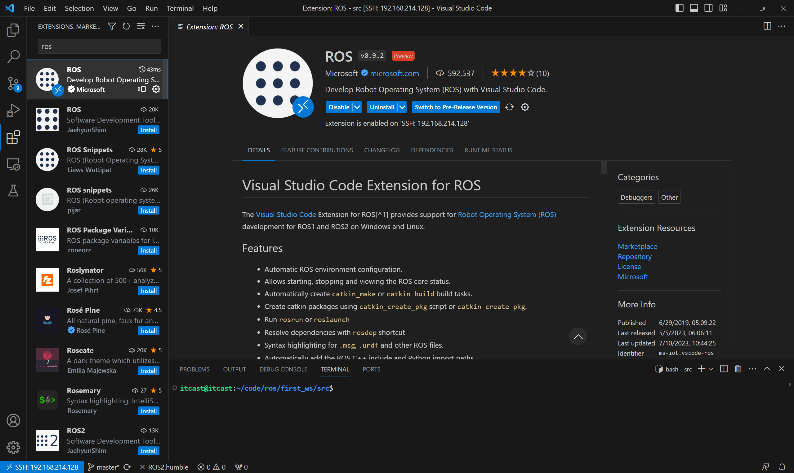</p><ul list="u71d50cf6"><li data-lake-id="uc7405528" fid="u27f84c7e" id="uc7405528"><strong><span class="lake-fontsize-14" data-lake-id="uadc57d09" id="uadc57d09" style="color: rgb(0, 0, 0)">Msg Language Support</span></strong></li></ul><p data-lake-id="uf271bfa5" id="uf271bfa5">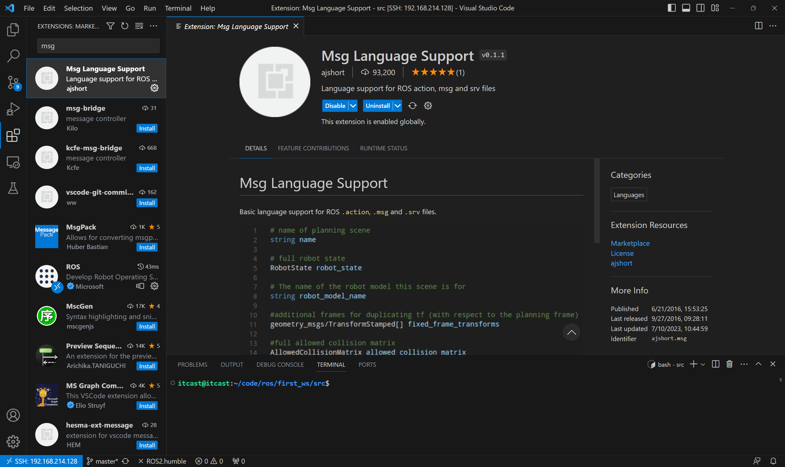</p><p data-lake-id="u67afbaea" id="u67afbaea"><br/></p><h1 data-lake-id="BIjZk" id="BIjZk"><span data-lake-id="ud0b35ae0" id="ud0b35ae0">头文件报错</span></h1><p data-lake-id="ue2f3f7d6" id="ue2f3f7d6"><span data-lake-id="u1905ba79" id="u1905ba79">如果代码编辑器里出现如下红色波浪号，可添加正确的头文件路径解决：</span></p><p data-lake-id="u9c952dfa" id="u9c952dfa">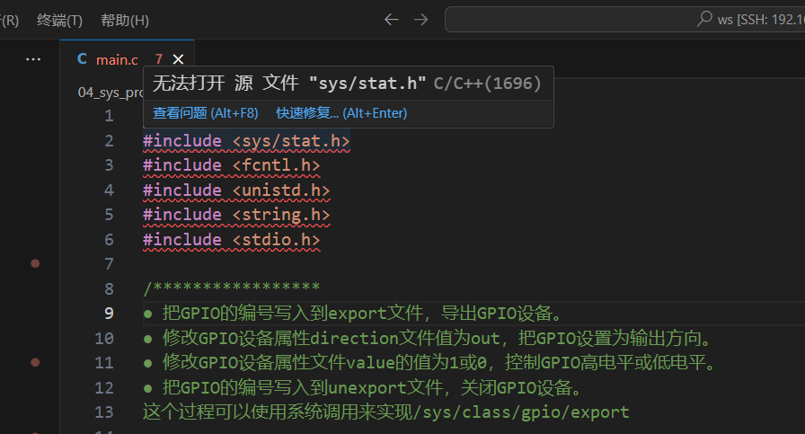</p><ol list="u9ec5db78"><li data-lake-id="u4b498a83" fid="u5de886ea" id="u4b498a83"><span data-lake-id="u93b1576f" id="u93b1576f">打开设置</span></li></ol><p data-lake-id="ub4fdf4ac" id="ub4fdf4ac"><span data-lake-id="u62d2fe55" id="u62d2fe55">按键盘快捷键</span><code data-lake-id="u24771277" id="u24771277"><span data-lake-id="u3df65dce" id="u3df65dce">Ctrl + Shift + P</span></code><span data-lake-id="ue64fa61b" id="ue64fa61b">， 或者</span><code data-lake-id="uf701954e" id="uf701954e"><span data-lake-id="ub995f259" id="ub995f259">F1</span></code><span data-lake-id="ud32a71f9" id="ud32a71f9">。输入UI，回车进入：</span></p><p data-lake-id="u78e129b4" id="u78e129b4"><code data-lake-id="u4cedd80c" id="u4cedd80c"><span data-lake-id="u05d85c52" id="u05d85c52">C/C++：编辑配置(UI)</span></code></p><p data-lake-id="u9b73dd41" id="u9b73dd41">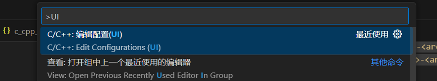</p><ol list="u78934b06" start="2"><li data-lake-id="u0d8e263f" fid="u60148148" id="u0d8e263f"><span data-lake-id="ued7a854d" id="ued7a854d">在</span><strong><span data-lake-id="u31f21e1a" id="u31f21e1a">包含路径</span></strong><span data-lake-id="u49654e84" id="u49654e84">中按照如下内容填写</span></li></ol><p data-lake-id="u81fb632f" id="u81fb632f">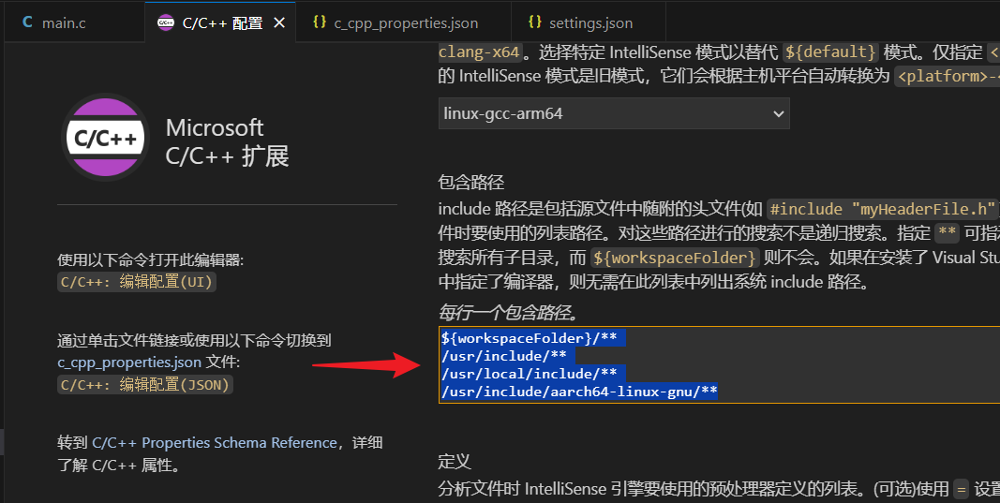</p><p data-lake-id="uff826dc8" id="uff826dc8"><span data-lake-id="udab37f54" id="udab37f54">设置内容如下：</span></p><span class="yuque-card-unsupported">[codeblock]</span><p data-lake-id="ud31a5052" id="ud31a5052"><span data-lake-id="u42d04e5e" id="u42d04e5e">此操作会自动将配置保存到文件</span><code data-lake-id="u782f0a26" id="u782f0a26"><span data-lake-id="u294105b0" id="u294105b0">.vscode/c_cpp_properties.json</span></code><span data-lake-id="u25aca7e6" id="u25aca7e6">里，确保包含最新的配置即可。</span></p><span class="yuque-card-unsupported">[codeblock]</span>